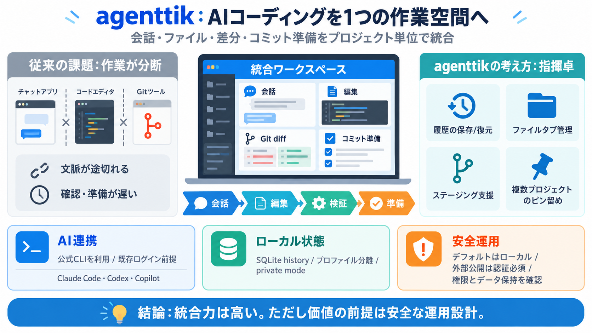

AI Agent Security Checklist (2026): Agentic Risks & Controls
Minimize the number of tools and limit each tool to essential functionality; avoid open-ended shell/URL extensions.LLM06…

統合AIコーディング環境
AIコーディングの「会話・ファイル・差分・コミット準備」を、プロジェクト単位の同一画面にまとめて運用するための仕組みです。
散らばる作業
AIチャット単体だと、会話→変更→差分確認→ステージング/コミットの導線が分断されやすく、文脈が途切れがちです。
指揮卓の発想
agenttikは、プロジェクトごとの作業空間を“キューと履歴を含む運用単位”として整理します。
公式CLI前提
Claude Code、Codex、GitHub Copilot等を、公式CLI経由で利用し、既存ログインを前提に統合します（agenttikは認証肩代わりではない可能性）。
ローカル状態が核
会話や履歴はローカルのSQLite historyに保持し、プロファイルで隔離できます。private modeはアプリデータを終了時に削除しつつ、プロジェクトファイルは残るとされています。
作業の流れを圧縮
ファイル閲覧/編集、Markdownプレビュー、Git diffの検査、ステージング、コミット作成支援までを“同一ワークスペース”に寄せます。
横断を“ピン留め”
Settingsで“別のピン留めプロジェクト”を使い、複数リポジトリの作業状況を点検しつつタスク管理できます。
計画的なAI活用
モデル選択だけでなく、effortや権限、定期実行や再利用プロンプト（スケジューリング）の考え方があります。
ローカル優位 vs 公開リスク
デフォルトはループバック（ローカル限定）ですが、サーバを外部公開するなら認証と信頼できるネットワーク設定が必須です。
運用の落とし穴
macOSビルドはNotarizeされていないため、ブロックされる場合は「Open Anyway」が必要です。またショートカット/トレイ挙動でAccessibility権限が関わるとされています。
FAQの要点
入力断片からは、認証代行の有無やエージェントの権限運用の詳細は確定できません。試験導入では“データ保持範囲”と“リモート公開条件”を優先確認してください。
結論
agenttikは、散らばるAIコーディングを“作業空間”として統合し、生産性と再現性を上げる方向性が強いです。導入判断は、特に認証・ネットワーク制御とデータ保持ポリシーを中心に行ってください（安全運用が価値の前提）。
Minimize the number of tools and limit each tool to essential functionality; avoid open-ended shell/URL extensions.LLM06…
║ ✓ Complete audit trail for forensics ║ ║ ║ ║ E - Escalation Control ║ ║ ✓ Human approval for high-risk actions ║ ║ ✓ M…
Every AI agent must have a verifiable identity, just like a human user. Strong cryptographic credentials, combined with …
1. User identity: The employee who initiated the request 2. Agent identity: The agent itself, which needs its own creden…
[14:54] Even if the agent tries to do something, I can set specific permissions on the database level to do so. So here'…